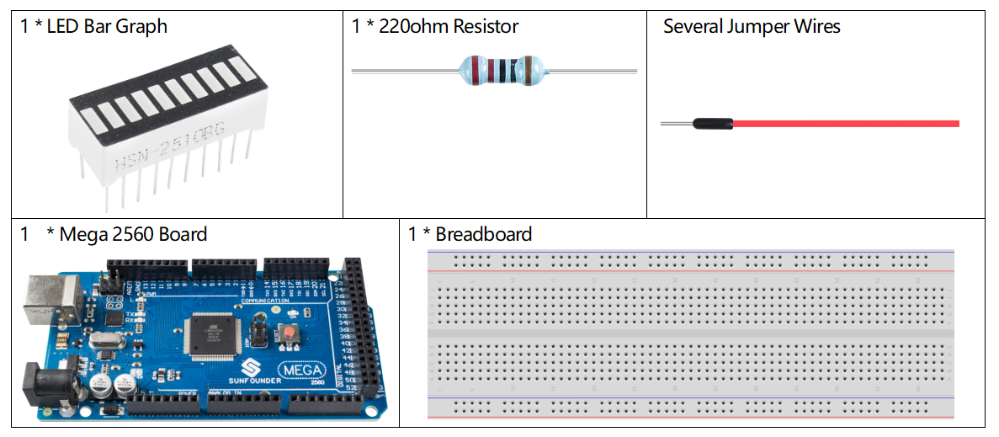
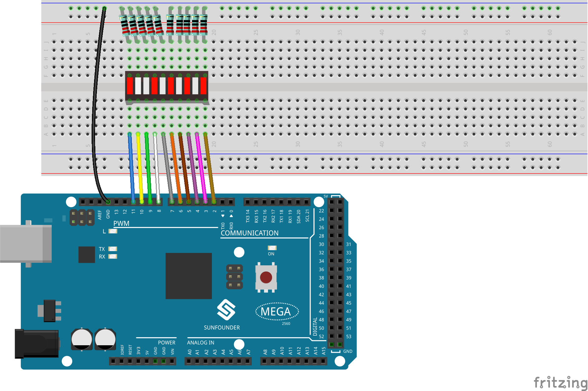

2.4 LED-Balkendiagramm¶
Überblick¶
In dieser Lektion lernen Sie etwas über LED-Balkendiagramme. Im Allgemeinen fungiert das LED-Balkendiagramm als Batteriestandsanzeige, Audiogerät und industrielles Bedienfeld. Wenn wir wollen, können wir auch die andere Anwendung finden.
Erforderliche Komponenten¶
Komponenteneinführung¶
Das LED-Balkendiagramm ist eine Reihe von LEDs, die zur Schnittstelle mit elektronischen Schaltkreisen oder Mikrocontrollern verwendet werden. Es ist einfach, ein LED-Balkendiagramm mit der Schaltung zu verbinden, beispielsweise 10 einzelne LEDs mit 10 Ausgangspins.
Bemerkung
Die Anode ist die Seite mit einem Etikett (1-10).
Fritzing Circuit¶
In diesem Beispiel verwenden wir die digitalen Pins 2 bis 11, um das LED-Balkendiagramm anzusteuern. Das LED-Balkendiagramm enthält zehn separate LEDs und jede LED verfügt über zwei Pins. Die linken Pins 1-10 des LED-Balkendiagramms sind jeweils mit den digitalen Pins 2-11 verbunden, die rechten Pins 11-20 erstrecken sich jeweils zur gleichen Seite dieser 220-Ohm-Widerstände, und die andere Seite dieser Widerstände ist alle mit GND verbunden.
Schematische Darstellung¶

Code¶
Wenn Sie die Codes auf die Mega2560-Karte hochgeladen haben, sehen Sie, dass die LEDs auf dem LED-Balkendiagramm nacheinander blinken.
Code-Analyse¶
Die Codes in setup () verwenden die for-Schleife, um die Pins 2 ~ 11 nacheinander in den Ausgabemodus zu initialisieren.
for(int i=2;i<=11;i++)
{
pinMode(i,OUTPUT);
}
Die for-Schleife wird in loop () verwendet, um die LED nacheinander blinken zu lassen (0,5 s einschalten, dann 0,5 s ausschalten).
for(int i=2;i<=11;i++)
{
digitalWrite(i,HIGH);
delay(500);
digitalWrite(i,LOW);
delay(500);
}
Weitere Informationen zur Steuerung der LED mithilfe digitaler Pins finden Sie in Teil 1-1.2 Digital Write.